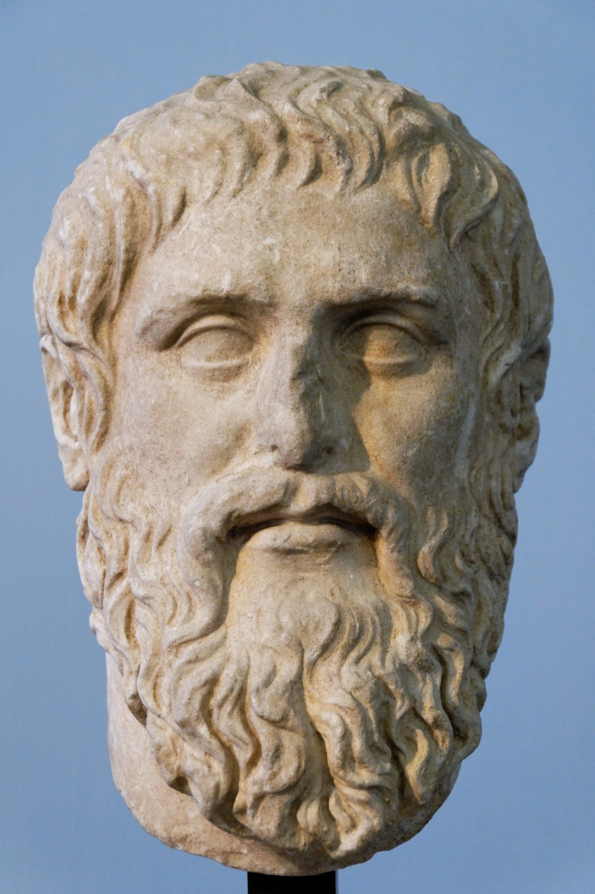
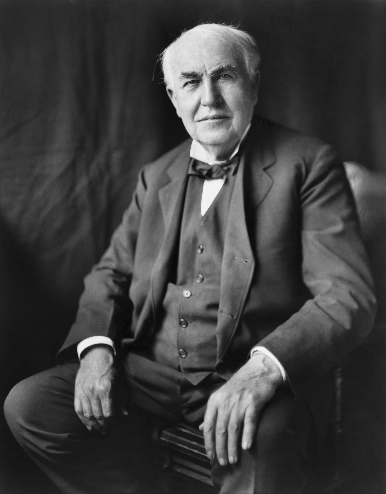

Central Questions
- Why should anyone "own" an idea, and what philosophical traditions justify intellectual property rights?
- What are the four primary types of IP, and why do they differ in duration and purpose?
- How did digital technology disrupt traditional IP business models, and how did the industry adapt?
- Do IP mechanisms primarily promote innovation and creativity — or primarily enable control by powerful interests?
- How should copyright and patent law respond to AI systems that train on human creative work and then generate new content?
- How do we balance creators' rights with the public's interest in access to knowledge?
Introduction: What Is Intellectual Property?
Consider a thought experiment proposed by Thomas Jefferson in an 1813 letter. Suppose you light a candle from my candle. You now have fire; but so do I — my flame is no smaller for having kindled yours. Now compare this to a sandwich. If I give you half my sandwich, I have half as much sandwich. Physical goods are rivalrous: my use prevents yours. But ideas are different. If I share an idea with you, I don't lose it. We both have it. You can share it with a hundred more people, and none of us has any less of it. Jefferson found this philosophically fascinating — and practically challenging. If ideas cannot be "taken" in any normal sense, what exactly would it mean to "own" one?
"He who receives an idea from me, receives instruction himself without lessening mine; as he who lights his taper at mine, receives light without darkening me."
— Thomas Jefferson, Letter to Isaac McPherson, 1813
Jefferson's puzzle is at the heart of intellectual property law — a body of legal rules that grants creators exclusive rights over their creations for specified periods of time. Unlike physical property rights, which recognize and protect something that already exists (my ownership of land or a car), IP rights create something that would not otherwise exist at all: legal scarcity in a domain where nature provides abundance. A book can be copied perfectly and at near-zero cost; without copyright law, nothing prevents anyone from doing so. A drug formulation can be synthesized by any competent chemist; without patent law, nothing prevents competitors from immediately entering the market. IP law deliberately creates artificial scarcity — not because scarcity is good in itself, but because the argument is that without it, creators and inventors would have insufficient incentive to create and invent.
Whether this argument is sound — whether current IP systems actually serve their stated purpose, or whether they have been captured by incumbent interests to serve different ends — is one of the central debates this chapter examines. The answer matters enormously for digital technology, because computers are, at their core, copy machines: they process information by copying it millions of times per second, and networks distribute that information globally at near-zero cost. Every fundamental thing a computer does collides with the assumptions built into traditional IP law.

The Four Types of Intellectual Property
Modern IP law recognizes four distinct categories of protection, each with a different theoretical basis, duration, and set of rules. Understanding these differences is important because debates about IP often conflate them: arguments that make sense for patents may not apply to copyright, and vice versa.
| Type | What It Protects | Duration (U.S.) | Key Feature |
|---|---|---|---|
| Copyright | Original creative expression: books, music, films, software, art | Life of author + 70 years | Protects expression, not ideas; fair use exception |
| Patents | Novel, useful, non-obvious inventions and processes | 20 years from filing | Requires public disclosure; exclusive right to make, sell, use |
| Trademarks | Brand identifiers: names, logos, slogans | Indefinite (if actively used and renewed) | Prevents consumer confusion; can be lost through "genericide" |
| Trade Secrets | Confidential business information: formulas, algorithms, client lists | Indefinite (while kept secret) | Protection ends if secret is disclosed or independently discovered |
Copyright is by far the most relevant category for the digital age, because it governs text, music, images, video, and software — the primary types of content that circulate on the internet. One crucial distinction that copyright law draws is between ideas and expression: copyright protects the specific way an author expresses an idea, not the idea itself. Anyone is free to write a novel about a young wizard attending a magical school; J.K. Rowling's copyright protects the specific words, characters, and plot of the Harry Potter series, not the concept of magical education. This idea-expression distinction is philosophically important: it reflects the recognition that ideas themselves cannot justly be monopolized, since they are the common building blocks of all intellectual activity.
Patents differ importantly from copyright in that they require public disclosure. When an inventor files for a patent, they must explain in detail how the invention works — this information becomes part of the public record, available for anyone to read and learn from. In exchange for this disclosure, the inventor receives a twenty-year monopoly on making, selling, and using the invention. The theory is that this is a fair bargain: society gets the knowledge, the inventor gets a temporary exclusive right. After twenty years, the invention enters the public domain and anyone can use the technology freely. Whether this bargain is actually fair — and whether twenty years is the right term — is a question the pharmaceutical industry case studies in this chapter will sharpen considerably.
A Brief History of Expanding Rights
| Year | Development |
|---|---|
| 1710 | Statute of Anne (Britain): first copyright law; 14-year term, renewable once |
| 1790 | U.S. Copyright Act: 14-year term, renewable once; narrow scope |
| 1886 | Berne Convention: international copyright harmonization; automatic protection |
| 1976 | U.S. Copyright Act: extended to life + 50 years; work-for-hire rules |
| 1994 | TRIPS Agreement: linked IP to global trade; forced developing countries to adopt strong IP regimes |
| 1998 | DMCA + Sonny Bono Act: extended to life + 70 years; criminalized circumvention of digital locks |
| 2020s | AI training, generative models, and streaming reshape every IP category simultaneously |
One of the most striking features of IP history is the relentless expansion of rights. Copyright terms in the United States began at 14 years and now extend to the life of the author plus 70 years — more than quadrupling the effective term. Patent protection has expanded to cover software, business methods, and even some abstract algorithms that earlier courts would never have recognized as patentable. Each extension has been justified on the grounds of "encouraging creativity" or "rewarding innovation," but critics have noted that these justifications apply awkwardly to retroactive extensions: extending copyright on a work already created cannot incentivize the creation of that work, since it already exists. Something else must be driving the expansion.
Thought Questions
- Jefferson argued that ideas are fundamentally different from physical goods because sharing an idea doesn't diminish it. Does this mean IP law is always unjust — or does the non-rivalrous nature of ideas affect only the appropriate length of protection?
- Copyright terms have expanded from 14 years to life + 70 years. What term length would you choose if you were designing the system from scratch, and what would guide your decision?
- The idea-expression distinction protects ideas from monopoly while protecting expression. Can you think of cases where this line is genuinely hard to draw?
Philosophical Justifications for IP
Why should intellectual property rights exist at all? Three major philosophical traditions offer competing answers. Each captures something important, but each also has significant weaknesses that the others do not share. Understanding the justifications matters because they generate different policy conclusions: if you are a Lockean, you might think IP should track how much labor the creator invested; if you are a utilitarian, you care only about whether the system actually produces more creation than alternative arrangements; if you follow Hegel, you think certain authorial rights should be inalienable regardless of economic consequences.
The Labor Argument
What's the Argument?
Locke's Labor Theory of Intellectual Property
- People have a natural right to the fruits of their labor — what they make by mixing their effort with the world belongs to them.
- Intellectual creations are the product of sustained mental labor: a novelist's years of effort, an inventor's decades of research.
- Without legal protection, others can immediately copy the result of that labor without contributing to the effort that produced it.
Locke's argument has intuitive appeal — it tracks our everyday sense that people deserve credit and compensation for what they create. But it faces serious objections when applied to intellectual work. Ideas are never purely original: every creator builds on earlier work, borrows from traditions, and recombines influences absorbed from the surrounding culture. Newton said he "stood on the shoulders of giants"; Shakespeare borrowed his plots wholesale from earlier sources; virtually every song shares chord progressions, rhythmic patterns, and melodic conventions with countless predecessors. If intellectual creations always build on prior creations, how much of any particular work is genuinely the creator's own? The Lockean framework struggles to draw this line.
Locke himself added a crucial proviso to the labor theory: property appropriation is justified only as long as "enough and as good" is left for others. In the physical world, this proviso eventually runs out — there is only so much land. But in the world of ideas, the proviso never runs out: the fact that Jefferson has expressed an idea does not prevent anyone else from expressing the same idea in their own words. This suggests that even if Locke's labor theory justifies some IP rights, it provides no justification for the strongest forms — those that effectively prevent others from building on existing ideas.
The Incentive Argument
What's the Argument?
The Utilitarian Case for Intellectual Property
- Society benefits greatly from creative works and technological inventions — from new drugs that save lives to novels that deepen human understanding.
- Creating such works requires substantial time, effort, and investment — a new pharmaceutical drug can cost over a billion dollars to develop and test.
- Without protection, competitors can immediately copy successful works and undercut creators on price without having borne the development cost.
- This free-rider problem would, over time, reduce creators' incentives and therefore reduce the quantity of new creation.
The incentive argument is how IP is most commonly defended in courts, legislatures, and economics textbooks. It is also the most empirically testable — and the empirical picture is more complicated than the clean theoretical argument suggests. For some industries (pharmaceuticals, where the cost of development vastly exceeds the cost of copying), patent protection appears genuinely necessary to sustain investment in R&D. For others (fashion, cuisine, perfume, jokes), industries have thrived for centuries without meaningful IP protection by relying on lead-time advantages, brand reputation, and rapid iteration. Open-source software — produced collaboratively by volunteers with no IP-derived revenue — powers the vast majority of the world's servers, smartphones, and websites. These examples suggest that IP incentives are neither universally necessary nor universally effective. For instance, consider some of the most creatively dynamic industries in history, all of which operate with minimal IP protection:
- Fashion design: Garment designs cannot be copyrighted, yet Paris fashion houses have driven global trends for over a century. Designers rely on prestige, lead-time, and rapid iteration rather than legal exclusivity.
- Restaurant cuisine: Recipes cannot be copyrighted, yet fine dining continuously innovates. Ferran Adrià's molecular gastronomy techniques were freely copied around the world — and his restaurant El Bulli remained the world's most coveted reservation for years anyway.
- Stand-up comedy: Once a joke is told publicly, anyone can repeat it. Yet comedians continue to produce new material because reputation and originality are competitive advantages that legal protection cannot substitute for.
- Sports strategy: A coach who invents a new play or defensive formation cannot patent it; opponents can immediately adopt it. Yet coaching innovation continues unabated.
A particularly sharp question for the incentive argument concerns term length. If the goal is to provide sufficient incentive for creation, the relevant question is: how much protection is enough? Economic analysis generally suggests that the optimal term is much shorter than current law provides — a songwriter is not more likely to compose a song because copyright will protect it for seventy years after their death rather than fifty. The additional decades of protection provide revenue to heirs and corporate rights-holders, not creative incentive to the original creator. This suggests that current terms have been extended beyond what incentive theory justifies — which raises the question of whose interests the extensions actually serve.
The Personality Argument
What's the Argument?
Hegel's Personality Theory of Creative Rights
- Human persons have dignity and deserve respect as self-creating beings whose identity is expressed in their projects and creations.
- Creative works embody the creator's personality, vision, and self-expression in a way that purely physical products do not.
The personality theory, associated with Hegel and developed most fully in continental European legal tradition, gives rise to the concept of moral rights — rights that exist independently of economic interests and cannot be waived by contract. A French author who sells the copyright to their novel to a publisher retains the right to be identified as the author and to object to alterations that damage their reputation. These rights are recognized in most European copyright systems and in the Berne Convention, but are much weaker in the United States, where copyright is predominantly treated as a commercial instrument. A revealing example of the difference: when Monty Python's television films were edited by American distributors — scenes cut, jokes removed, commercial breaks inserted without permission — the troupe sued successfully in the 1970s, but had to rely on contract law and trademark rather than any formal moral right. Their core complaint — "this is no longer our work, yet it bears our name" — is precisely what moral rights are designed to address, and US copyright law simply had no mechanism for it. European creators in the same situation would have had a straightforward legal claim.
The personality theory has an interesting implication for AI-generated content: if the justification for creators' moral rights is that works express the creator's personality, then a work generated by an AI — which has no personality in the relevant sense — would not be entitled to the same protections. We return to this issue in the AI section below.
The Social Contract of IP
Across all three justifications runs a common structural idea: IP rights represent a bargain between creators and the public. Creators receive a temporary exclusive right; in exchange, the public eventually receives full, free access to the work. This bargain is explicit in patent law (which requires disclosure of the invention in exchange for the monopoly) and implicit in copyright (which eventually expires, releasing works into the public domain). The social contract model predicts that when IP rights are working properly, they should balance creator incentives against public access — neither so weak that creators cannot recoup their investment, nor so strong that they constitute permanent monopolies on human knowledge.
invests effort"] MON["Limited
Monopoly
(copyright / patent)"] PD["Public
Domain
(free for all)"] CR -->|"grant exclusive rights"| MON MON -->|"term expires"| PD PD -->|"builds new
creative work"| CR style CR fill:#ebe1fa,stroke:#3d1a8a style MON fill:#f5f5d6,stroke:#888 style PD fill:#d6f0e4,stroke:#1a6040
Critics like James Boyle argue that this bargain has broken down . Copyright terms have been extended so many times that works effectively never enter the public domain within the lifetime of anyone who was alive when they were created. Retroactive extensions cannot serve the incentive function the theory requires. The result, Boyle argues, is a "second enclosure movement" — the fencing off of the intangible commons of the human mind, analogous to the enclosure of common lands in England that converted shared resources into private property.
Thought Questions
- Which justification for IP — labor, incentive, or personality — do you find most compelling, and why? Does your answer change depending on whether you are thinking about music copyright or pharmaceutical patents?
- The incentive theory says IP should provide just enough protection to motivate creation. How would you determine empirically whether any particular term length achieves this goal?
- If AI can generate creative content without any financial incentive, what does that imply for the incentive-based justification for copyright?
Digital Disruption
Intellectual property law was built on assumptions about the physical world: that copying is expensive and imperfect, that distribution requires physical infrastructure, and that enforcement is practical at the level of commercial reproduction. Digital technology invalidated all three assumptions simultaneously. A perfect copy of a digital file costs essentially nothing to make. The internet distributes that copy globally in seconds. And the sheer volume of individual reproduction makes traditional enforcement — catching and suing copyists — impractical at scale. The result was one of the most severe disruptions any established industry has ever experienced.

Thomas A. Edison, c. 1877–1880. Public domain.
Thomas Edison (1847–1931)
American inventor and businessman, Edison held 1,093 U.S. patents — a record that stood for decades. He pioneered the industrial research laboratory at Menlo Park, New Jersey, which he called his "invention factory": a facility staffed by skilled researchers whose explicit job was to produce patentable inventions on a systematic schedule. His most famous inventions include the phonograph, the practical incandescent light bulb, and early motion picture technology.
Edison's career raises a persistent question about the patent system's relationship to innovation. On one hand, his laboratory's output was genuinely remarkable. On the other, Edison's aggressive patent strategies — especially in the "War of Currents" against Nikola Tesla and George Westinghouse over the standard for electrical power — are widely seen as having retarded adoption of the superior AC system. Edison used IP as a competitive weapon, not merely a reward for invention. This combination of genuine creativity and strategic litigation is characteristic of how large actors use IP today.
How Digital Changed Everything
Before digitization, the economics of creative industries rested on the cost of physical reproduction. A vinyl record required pressing; a book required printing and binding; a film required celluloid and a projector. These physical constraints made large-scale copying expensive enough to be commercially impractical for ordinary consumers. The industries that formed around creative works — record labels, publishers, film studios — were not primarily in the business of creating content; they were in the business of manufacturing and distributing physical objects. Their enormous economic power derived from control of these physical infrastructure systems.
Digital technology severed the connection between content and physical carrier. A digital music file is not a physical object — it is a pattern of numbers that can be copied perfectly at negligible cost. When Napster launched in 1999, it revealed just how completely this change had undermined the existing business model. College students were sharing millions of songs through a peer-to-peer network, with no physical product changing hands, no money, and no copyright license. The music industry's revenue collapsed. The recording industry's response — litigation, legislation, and technical protection measures — shaped the legal and technological landscape of the internet for decades.
Case Study
Napster and the P2P Revolution (1999–2001)
Launched by Shawn Fanning and Sean Parker while Fanning was a student at Northeastern University, Napster enabled users to share MP3 files directly with one another through a centralized index server. At its peak, the service had over 80 million registered users and indexed hundreds of millions of songs. The Recording Industry Association of America, along with major labels, sued Napster for contributory copyright infringement in A&M Records v. Napster. The courts agreed, and Napster was forced to shut down in 2001.
But shutting down Napster did not end file sharing — it drove it to decentralized alternatives that were legally much harder to attack. Kazaa, Grokster, and BitTorrent did not maintain central servers, making them legally more resistant. Eventually, the industry largely accepted that it could not sue its way out of the problem. The lasting consequence of Napster was not the death of music piracy but the death of the CD-based business model, which was replaced — eventually — by streaming services. iTunes, launched in 2003, and Spotify, launched in 2008, demonstrated that consumers would pay for convenient legal access to music. By the 2020s, streaming revenue had restored the music industry to growth — but on fundamentally different terms, with value concentrated in platforms rather than labels or artists.
Case Study
The DMCA and the Problem of Digital Locks (1998)
The Digital Millennium Copyright Act was Congress's legislative response to digital reproduction. Its most consequential provision — and most controversial — was the anti-circumvention clause: it made it illegal to circumvent "technological protection measures" (digital locks, or DRM) even for purposes that would otherwise be entirely legal under copyright law. The logic was that if a rights-holder could lock their digital content, that lock should be legally protected.
The practical consequences were broader than anyone anticipated. Security researchers who reverse-engineered software to find vulnerabilities found themselves potentially criminalized. Owners of products who wished to repair them found that accessing the diagnostic software embedded in their tractors, insulin pumps, or smartphones could technically violate the DMCA. Librarians and educators who needed to make accessible versions of digital texts for disabled users faced legal uncertainty. The EFF and others have argued that the DMCA effectively transferred power from content owners to content manufacturers — you can own a DVD but the DMCA prevents you from making a backup copy for personal use. A series of exemptions granted by the Copyright Office every three years provides limited relief, but the underlying law remains a significant restriction on the ownership rights and fair use privileges that copyright law otherwise protects.
From Ownership to Access: The Streaming Model
The dominant response to digital disruption — at least in music, video, and ebooks — has been a fundamental shift in the economic model: from ownership to access. Under the old model, consumers paid once to own a physical copy of a creative work. Under the new model, consumers pay a monthly subscription fee for access to a platform's catalog, which they do not own and which can be modified or withdrawn at any time. This shift has profound IP implications that are often overlooked in celebrations of streaming's convenience.
| Metric | Value (approximate, 2024) |
|---|---|
| Spotify pay per stream | $0.003–$0.005 (varies by country and deal terms) |
| Streams needed to earn $1 | 200–330 streams |
| Minimum threshold (2024) | 1,000 streams per year to earn anything at all |
| Who captures most streaming revenue | Platforms and major labels (through negotiated catalog deals) |
The streaming model reveals a gap between formal IP rights and practical economic power. An independent musician technically owns the copyright to their recordings, but if they want their music on Spotify, they must accept Spotify's terms. Those terms are set by a near-monopolist platform negotiating with dispersed individual creators. The formal right is present; the bargaining power to extract value from it is not. This pattern — formal IP rights concentrated in creators, practical economic power concentrated in platforms — recurs across the creative economy and is central to the critiques examined in the next section.
Thought Questions
- Did Napster "kill" the music industry, or did it force the industry to find a better business model? Could the industry have made this transition voluntarily, without the disruption?
- The DMCA makes it illegal to circumvent digital locks even for legal purposes. Does this represent a reasonable balance between creator rights and user rights — or has it tilted too far toward rights-holders?
- When you pay for a streaming subscription, you don't "own" the content — you rent access to it. Does this distinction matter morally? What are its practical consequences?
Critiques and Abuses of IP
A significant body of critical scholarship argues that intellectual property law, whatever its original justifications, has become a mechanism for concentrating economic power in incumbent corporations rather than for incentivizing or rewarding genuine creation. Three scholars have been particularly influential in developing these critiques.
Peter Drahos (b. 1955)
Australian legal scholar and professor at the Australian National University, Drahos is the leading analyst of how IP has been globalized as a tool of corporate and geopolitical power . His central concept is "information feudalism": the argument that through trade agreements like TRIPS (Trade-Related Aspects of Intellectual Property Rights), a small number of powerful corporations — primarily American and European pharmaceutical, software, and entertainment companies — successfully pressed governments to adopt and enforce strong IP regimes worldwide, including in developing countries that had no domestic interest in such protections.
The mechanism, Drahos argues, was leverage: IP protection was bundled with access to wealthy-country markets in trade negotiations, so developing countries that wanted trade access had to accept IP terms written by their trading partners' corporate lobbies. The result is a set of global IP norms designed to maximize the rents flowing to incumbent rights-holders, not to achieve any theoretically optimal balance between incentive and access. Drahos calls the outcome "IP feudalism" because it creates hierarchical relationships between IP owners (lords) and those who must pay for access to knowledge (serfs) — including access to medicines, seeds, and software.
Cory Doctorow (b. 1971)
Canadian-British science fiction writer and technology journalist, Doctorow is one of the most prolific and accessible critics of how Big Tech and Big Content use IP to maintain market power . His central concept is "chokepoint capitalism": the argument that Amazon, Spotify, Google, Apple, and the major content conglomerates have created bottleneck control points in markets for creative goods, and that IP law — combined with platform market power — enables them to squeeze creators from both sides.
Doctorow's analysis distinguishes between the original purpose of IP (providing creators with enough leverage to earn a living) and its current function (providing platforms and conglomerates with the legal tools to extract rents from creators and consumers alike). The problem, in his view, is not primarily piracy but monopsony: creators face a small number of buyers (platforms) with enormous market power, while those same platforms face a large number of sellers (creators) with no individual leverage. IP law in this context doesn't protect creators — it protects the platforms' ability to control the terms on which creators can reach their audiences.
Tim Wu (b. 1972)
American legal scholar, former White House adviser, and the originator of the concept of "net neutrality," Wu has analyzed how communication technologies follow a predictable cycle in their relationship to power . His "Cycle" runs: open technology attracts users → incumbents use IP and other legal tools to close the technology → consolidation follows → until the next disruptive technology reopens the market.
Wu argues that IP is one of the primary legal instruments through which the "closing" phase of the Cycle operates. AT&T used patents to control the telephone network for decades; Hollywood studios used copyright to control film distribution; IBM used software patents to maintain mainframe dominance. In each case, the IP rights were real and legally valid — but their function in practice was to maintain incumbent control rather than to reward innovation. Wu's historical sweep suggests that the current dominance of Big Tech platforms is one more iteration of a cycle that will eventually be disrupted — but that IP law enables the current closed phase to persist much longer than would otherwise be the case.
Case Studies in IP Abuse
Case Study
Disney and the "Mickey Mouse Protection Act" (1928–2024)
Few cases illustrate the critique of IP expansion better than the history of Mickey Mouse's copyright. Mickey first appeared in "Steamboat Willie" in 1928. Under the copyright law of the time, that work would have entered the public domain in the 1980s. Disney lobbied successfully for copyright extensions in 1976 and again in 1998 — the latter extension is often called the "Sonny Bono Act" or, sardonically, the "Mickey Mouse Protection Act" — each time just before Mickey would have become public domain. The 1928 version of Steamboat Willie finally entered the public domain on January 1, 2024, nearly a century after its creation.
The utilitarian argument for retroactive extension is weak: a copyright extension cannot incentivize the creation of a work that already exists. The economists who have studied copyright term length find that the optimal term for incentive purposes is much shorter than current law provides — extensions beyond the first few decades of protection add negligible incentive while substantially restricting public access. What the extensions do provide is continued rent collection for corporations that acquired rights from long-deceased creators. Disney, meanwhile, retains trademark protection on the Mickey Mouse character in his more familiar modern form, meaning that even the public domain Steamboat Willie version cannot be used in ways that create confusion with Disney's current brand.
Case Study
Pharmaceutical Patents and Access to Essential Medicines
The pharmaceutical industry presents perhaps the starkest version of the tension between IP incentives and public welfare. Drug development is genuinely expensive: a new drug from initial research to FDA approval costs an estimated one to two billion dollars, and most compounds that enter clinical trials fail. Patent protection for twenty years gives pharmaceutical companies the opportunity to recover these costs by charging prices far above production cost during the patent term. After expiration, generic manufacturers can produce the same drug at a small fraction of the price.
The human cost of this system has been documented in stark terms. When HIV/AIDS antiretroviral drugs were first patented in the 1990s, they were priced at $10,000–$15,000 per year — far beyond the reach of patients in sub-Saharan Africa, where the epidemic was worst. Generic versions, when eventually permitted, cost around $100 per year. Insulin, essential for people with diabetes, costs several times more in the United States than in other wealthy countries because of patent and market strategies. The EpiPen's price increased over 600% in a decade despite the underlying drug being off-patent, through a combination of device patents and regulatory barriers. These cases have prompted serious debate about whether the patent bargain — monopoly pricing in exchange for public disclosure and eventual generic access — is actually well-calibrated to the public interest in the pharmaceutical context.
Case Study
Patent Trolls and the Innovation Tax
A "patent troll" (the industry's preferred term is "non-practicing entity" or NPE) is a company that owns patents but does not manufacture any products using those patents. Its business model is to acquire patents — often vaguely worded ones covering broad abstract concepts — and then threaten or sue companies that make real products, extracting settlements that are less expensive than the cost of defending the litigation. A patent lawsuit costs on average two to five million dollars to defend through trial; settling for $100,000–$500,000 is rational even for defendants who would win.
Personal Audio LLC famously sued podcasters for alleged infringement of a patent on "episodic content distribution" — claiming that publishing audio files in a series infringed their patent on the concept. The Electronic Frontier Foundation ultimately challenged and invalidated the key patent, but only after years of litigation. Studies by economists have found that patent trolls extract billions of dollars from the economy annually in settlements and litigation costs, with most of that money going to lawyers and NPE shareholders rather than to any actual inventor. This activity consumes resources that would otherwise fund productive innovation, particularly harming small startups that lack legal resources but face the same litigation threats as large corporations.
Thought Questions
- Retroactive copyright extensions (like those that protected Mickey Mouse) cannot incentivize creation already done. What alternative explanation best accounts for why they keep happening?
- The pharmaceutical industry argues that without patent protection, companies could not afford to develop new drugs. Is this argument convincing? Are there alternative models that might work?
- Patent trolls use legally valid patents in ways that most people find abusive. Does this mean the problem is with specific actors, or with the system that enables this behavior?
Big Tech and IP as a Competitive Weapon
Large technology companies use intellectual property not primarily as a mechanism for recovering investment costs, but as a strategic instrument of competitive advantage. Understanding how they do this requires moving beyond the traditional conception of IP as a reward for creators and toward IP as a component of corporate strategy.
| IP Tool | Strategic Use |
|---|---|
| Patent portfolios | Build massive defensive portfolios; cross-license with other giants (mutually assured destruction); sue smaller competitors who cannot reciprocate |
| Copyright | Control user-generated content; issue DMCA takedowns against critics and competitors; protect proprietary code |
| Trade secrets | Keep algorithms, training datasets, and business methods confidential; use to block disclosure even in litigation |
| Trademarks | Brand protection; control keyword advertising; block competitors' use of similar names |
| Terms of Service | Create IP-like control over user behavior without the limitations that formal IP law imposes |
One important pattern is what might be called "mutually assured IP destruction" among large technology companies. Google, Apple, Microsoft, and Amazon each hold tens of thousands of patents. If any one of them were to aggressively sue another for patent infringement, the defendant could immediately counterclaim with its own portfolio. The result is a cold war: large companies effectively cross-license each other's patents implicitly by threat alone. But this détente does not extend to smaller competitors, who lack the portfolio to retaliate. For them, the threat of patent litigation from a well-resourced incumbent is a significant barrier to market entry — which is, of course, the point.
Terms of Service as Private Law
Terms of Service agreements — the contracts users must accept to access any major platform — function as a form of private IP law. A typical ToS grants the platform a perpetual, worldwide, royalty-free license to use, display, and distribute any content the user uploads. It allows the platform to modify or remove content at will, to change the agreement unilaterally, and to require binding arbitration rather than court access for disputes. These provisions create IP-like control over user-generated content without the limitations that copyright law imposes: no fair use exception, no term limit, no public domain. Critics point out that these are contracts of adhesion — take it or leave it — signed without meaningful negotiation by users who often have no practical alternative.
Case Study
Oracle v. Google and the Question of API Copyright (2021)
An Application Programming Interface (API) is a set of function calls, definitions, and protocols that allow different software systems to interact. Google used Java APIs — the declarations of function names and signatures — in building the Android operating system, without licensing them from Oracle (which had acquired Java from Sun Microsystems). Oracle sued for copyright infringement, seeking billions of dollars in damages. The case turned on a question that went to the heart of the software industry: can API declarations be copyrighted?
After more than a decade of litigation, the U.S. Supreme Court ruled 6–2 in favor of Google in 2021 — but on fair use grounds, without deciding whether APIs are copyrightable at all. The Court emphasized the transformative nature of Android's use and the enormous programmer investment that had been made in learning Java's APIs. The stakes were enormous: had Oracle won a broad ruling that APIs are copyrightable and Google's use was not fair use, incumbents with established APIs could have effectively locked out competitors from building interoperable software. The case illustrated how IP boundaries directly determine whether software markets remain competitive or become captured by first-movers.
Case Study
The Right to Repair Movement
When you buy a modern iPhone, John Deere tractor, or hospital medical device, you receive a physical product — but you do not receive full rights over it. Manufacturers use a combination of DMCA anti-circumvention provisions, parts pairing (software that prevents components from working unless authenticated by the manufacturer), and proprietary diagnostic tools to ensure that independent repair is either impossible or illegal. Apple has required that replacement screens, cameras, and batteries be "paired" to a specific device through Apple's servers, so that installing an identical genuine Apple part from a different device results in a software error. John Deere locks farmers out of the diagnostic software in their tractors, meaning a farmer whose tractor breaks down at harvest time may wait days or weeks for an authorized technician rather than fixing the problem themselves in hours.
The right-to-repair movement argues that this represents a fundamental shift in the meaning of ownership: if you cannot repair, modify, or resell a product freely, in what sense do you own it? Beginning around 2020, state legislatures and the FTC began to respond. Several states passed right-to-repair laws for electronics and farm equipment; some manufacturers voluntarily loosened restrictions. The underlying tension — between manufacturers' use of IP to create locked-down product ecosystems and consumers' reasonable expectation that owning a product means controlling it — remains unresolved.
Thought Questions
- If APIs could be copyrighted without a fair use defense, how might that change the software industry? Would it help or hurt innovation?
- Do you "own" a device that you cannot legally repair? What moral intuitions does the right-to-repair debate activate?
- Terms of Service agreements grant platforms sweeping rights over user content in exchange for access to the service. Is this a fair exchange? Should ToS agreements be regulated?
AI and Intellectual Property
Artificial intelligence creates two distinct clusters of IP problems that existing law is ill-equipped to handle: the question of whether AI training on copyrighted works constitutes infringement, and the question of who — if anyone — owns the copyright in works an AI generates. Both questions have enormous stakes for the future of both AI development and the creative industries.
Training Data and the Copyright Question
Large language models like GPT-4, Claude, and Llama are trained on massive collections of text gathered from the internet, including enormous quantities of copyrighted books, articles, news stories, academic papers, and creative writing. Image-generation models like Stable Diffusion and Midjourney are trained on billions of images, including the copyrighted artwork of living artists. The fundamental legal question is whether this training process — which involves making copies of copyrighted works in order to extract statistical patterns from them — constitutes copyright infringement.
| Position | Core Argument |
|---|---|
| Infringement | Training requires copying entire works; the resulting models can reproduce copyrighted content; creators' work was used without consent or compensation to build commercial products |
| Fair use | Training is transformative (statistical pattern extraction, not reproduction); AI models don't substitute for the original works; analogous to Google Books, which was found to be fair use |
| New paradigm needed | Copyright was not designed for machine learning; a new licensing framework or levy system is needed rather than applying existing rules |
Case Study
The AI Copyright Wars (2023–Present)
Beginning in 2023, a wave of copyright lawsuits targeted major AI companies. The New York Times v. OpenAI and Microsoft case alleged that OpenAI trained its models on millions of Times articles and that ChatGPT can reproduce them almost verbatim, directly competing with the Times's own products. Authors Guild v. OpenAI brought similar claims on behalf of book authors. Getty Images sued Stability AI for training on Getty's photo library without license. Class actions were filed against Meta, Anthropic, and other AI companies by groups of authors, visual artists, and musicians.
By 2025, sixteen copyright lawsuits against AI companies had been consolidated in the Southern District of New York, and courts were beginning to produce the first substantive rulings. Two federal courts found that AI training constituted "highly transformative" use, suggesting a fair use defense is available — but these rulings were preliminary and the landscape remains uncertain. The stakes extend far beyond the specific cases: if AI training requires licensing, only the largest and best-capitalized companies can afford to train frontier models, potentially concentrating AI capability further. If training is broadly fair use, existing creators have no legal recourse against the appropriation of their work. Either outcome has profound implications for both the creative economy and the future of AI development.
AI-Generated Content: The Authorship Question
The second cluster of problems concerns works that AI systems generate. If a language model writes a short story, or a diffusion model creates an image, who — if anyone — holds the copyright? The U.S. Copyright Office has issued a series of guidance documents taking the position that copyright requires human authorship: a purely AI-generated work is not copyrightable. Where a human exercised sufficient creative control — selecting, arranging, and modifying AI output in ways that reflect human creative choices — those human contributions may be protectable, but the AI-generated elements are not.
This position has significant practical implications. AI-generated content would effectively enter the public domain immediately upon creation, since it has no author who could hold a copyright. This creates a perverse incentive: companies that publish AI-generated content might be motivated to obscure AI's role in order to claim copyright protection, and courts would then face the difficult task of determining how much human input is "enough" to qualify for protection. A more systematic challenge to the Copyright Office's position may emerge from the Hegel tradition: if the personality theory grounds authorship rights in the expression of a creator's self, then works that reflect a user's creative vision expressed through AI tools — where the human selects, directs, and refines — may have stronger claims to authorship than works generated with minimal human direction.
Thought Questions
- If training AI on copyrighted works without license is found to be infringement, what should happen to AI systems that were already built on such training data? Can that harm be remedied retroactively?
- The Copyright Office says AI-generated works are not copyrightable because copyright requires human authorship. Is this the right line to draw — or should copyright protection track the creative effort invested, regardless of whether it was human or machine?
- If AI can generate high-quality creative content at near-zero cost, what does this imply for the economic sustainability of creative careers? Does IP law provide the right tool for addressing this, or are other mechanisms needed?
Open Source and Alternative Models
One of the most important challenges to the standard incentive-based justification for IP is not a philosophical argument but an empirical fact: enormous quantities of high-quality creative and technical work are produced outside the IP system entirely, through voluntary collaboration and sharing. The open source software movement is the most striking example, but it is not the only one.
The Open Source Movement
The Linux operating system — which runs the vast majority of the world's web servers, the Android operating system on billions of smartphones, and much of the infrastructure of the internet itself — was not created by a corporation seeking to profit from IP rights. It was initiated by Linus Torvalds in 1991 as a personal project, and has since been developed by thousands of volunteer contributors worldwide with no central coordination and no IP-derived revenue. The Apache web server, Python, the Firefox browser, the Chromium browser that underlies Google Chrome, and the majority of the programming languages and frameworks used in modern software development are all open source, developed under licenses that guarantee free access and modification. For example, when you visit a typical website, you are almost certainly benefiting from an entirely volunteer-built software stack: the Linux server hosting it, the Nginx or Apache process routing your request, the MySQL or PostgreSQL database storing its content, the Python or PHP code generating the page, and the Chromium-based browser rendering it on your screen. Every layer of that stack was built without IP incentives — representing, by some estimates, hundreds of billions of dollars of software value created by people who chose to give it away.
The open source model uses IP law itself to ensure openness. "Copyleft" licenses like the GNU General Public License (GPL) work by granting everyone the right to use, modify, and redistribute the software — but requiring that any modified version be distributed under the same license. This "viral" property means that no one can take a copyleft-licensed project, modify it, and then distribute the modified version as proprietary software: the moment you distribute, you must share your changes. "Permissive" licenses like MIT and Apache are more lenient, allowing code to be incorporated into proprietary products. Both represent a creative use of copyright law to achieve goals opposite to its traditional function.
The open source movement poses a serious challenge to the utilitarian justification for IP. If IP incentives are necessary for high-quality creation, how do we explain Linux, Wikipedia, or the thousands of other open-source projects that represent the de facto infrastructure of the modern internet? Researchers studying motivation in open-source communities find a mix of factors: professional reputation (public contribution portfolios are visible to employers), community belonging, ideological commitment to open knowledge, and the practical benefits of improving tools one uses oneself. None of these motivations require IP exclusivity.
Creative Commons
Founded in 2001 by Lawrence Lessig and others, Creative Commons provides a standardized set of licenses for non-software creative content. Where traditional copyright is all-or-nothing (all rights reserved), Creative Commons licenses allow creators to grant specific permissions in advance, enabling a spectrum from nearly public domain to only slightly less restrictive than full copyright.
| License | What It Allows |
|---|---|
| CC0 | Anything at all — equivalent to placing the work in the public domain |
| CC BY | Any use with attribution to the creator |
| CC BY-SA | Any use with attribution + share alike (derivatives must use same license) |
| CC BY-NC | Non-commercial use with attribution |
| CC BY-NC-ND | Non-commercial use, no derivatives, attribution required |
Wikipedia is the most prominent example of Creative Commons in practice: its content is licensed under CC BY-SA, meaning anyone can use, translate, or adapt Wikipedia's articles as long as they attribute Wikipedia and license their own derivative under the same terms. OpenStreetMap, Khan Academy's educational content, and the majority of educational open resources (OER) published for use in K-12 and higher education use Creative Commons licenses. These projects represent a form of intellectual commons — shared resources that anyone can use and build on — that the traditional IP system does not easily accommodate.
The AI era has introduced a new complication for Creative Commons. Many AI image generators and language models were trained on content licensed under Creative Commons, including CC-licensed images from Flickr and CC-licensed text from Wikipedia. Whether this use was consistent with the spirit (if not the letter) of licenses that creators chose to share their work openly is a live debate. Some creators who chose CC licenses explicitly to enable human sharing and adaptation feel that training a commercial AI model on their work without compensation is a use they would not have authorized — while technically the license text may permit it.
Thought Questions
- If massive quantities of high-quality software, encyclopedic knowledge, and educational content are produced without IP incentives, does this undermine the utilitarian case for strong IP protection? Or are open-source and CC projects exceptional cases that don't generalize?
- The GPL uses copyright law to enforce openness. Is this a clever hack that turns IP against itself — or a misuse of a system designed for a different purpose?
- If you release a work under a Creative Commons license allowing free use, and an AI company trains a commercial model on it, have your rights been violated? Should CC licenses be updated to address this case explicitly?
Key Points
Key Points
- Intellectual property differs fundamentally from physical property: ideas are non-rivalrous (your use does not diminish mine), so IP law must create artificial scarcity through legal rules rather than relying on natural limits.
- Three philosophical justifications compete for dominance: Locke's labor theory (creators deserve the fruits of their work), the utilitarian incentive argument (IP maximizes social welfare by motivating creation), and Hegel's personality theory (creative works express the creator's identity, justifying moral rights beyond economic ones).
- IP terms have expanded continuously — U.S. copyright has grown from 14 years to life + 70 years — in ways that outrun any incentive-based justification, suggesting that incumbent corporate interests rather than public welfare are driving the changes.
- Digital technology invalidated IP law's core assumptions (costly copying, physical distribution, practical enforcement) simultaneously, forcing industries into painful adaptation that ultimately shifted economic value from content creators to platforms.
- The DMCA's anti-circumvention provision criminalized breaking digital locks even for legal purposes — blocking repair, security research, and accessibility — effectively shifting power from content owners to manufacturers.
- Critical scholars — Drahos, Doctorow, Wu — argue that IP has been captured by large incumbents who use it to maintain market control, extract rents from creators and consumers, and foreclose competition, rather than to incentivize creation.
- AI training on copyrighted works raises unsettled legal questions: whether training constitutes infringement, whether fair use applies, and how to compensate creators whose work was used to build commercial AI products.
- AI-generated content is currently not copyrightable under U.S. law because copyright requires human authorship — raising questions about incentives, transparency, and how much human creative direction is "enough" to qualify.
- Open source and Creative Commons demonstrate that significant, high-quality creative and technical work can be produced outside traditional IP incentive structures, challenging the universality of the utilitarian argument for strong IP protection.